バツー洞窟その2
BatuCaveTemple2;KualaLumpure
ヒンズー教の聖地、荘厳なる洞窟寺院、バツー洞窟の階段を降りて、さあ帰ろうと思ったら階段を降りたところに看板があった。
そこには一言「アートギャラリー」と記されていた。
むむ。こんなところで●ッセンとかヒロ山●とかの版画でも売ってるのかあ〜、と思ったが一応行ってみる事に。
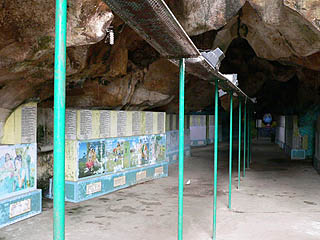
先程の洞窟とはまた別の小さい洞窟があったのだ。洞窟にはヒンズー神話をモチーフにしたと思われる絵が並んでいる。なるほど、こりゃ確かにアートギャラリーだわな。
さすがにここまで歩を進める観光客ははとんどおらず、ガラーンとしている。ってゆーか有料なんですよね。ここだけ。
ま、こんなもんか。と思い、踵を返そうとしたが、どうも洞窟が奥の方に続いている。安いとはいえ入場料を払っている訳で、勿体ないから奥まで見て行くか・・・というスケベ根性の結果、驚愕の光景を目にしようとはこの時点ではヴィシュヌ様でも御存じあるまい・・・
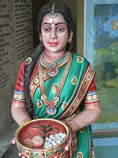 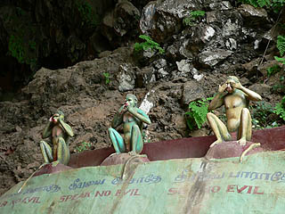
トンネル状の「アートギャラリー」の付近には無言でお布施を請求する奥様や見ザル言わザル聞かザルの三猿などがいる。これって日本だけじゃなかったんですね。先程の大階段での猿の御乱行を目の当たりにした者としては引ったくらザルも入れて欲しかったです。あと引っ掻かザルとかおしっこせザルとかも。
洞窟も突き当たりが見えて来て、そろそろ終わりかなあ〜と思いつつ、右を見ると・・・
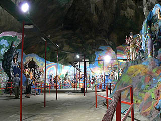
なっ、ナンじゃこりゃあ〜！！！
七色に塗りたくられた超絶の激サイケデリックワールド。
広さは先程の洞窟とは比べようもないが、その岩壁はこってこてに塗りまくられている。
そのサイケ塗りの壁を背景にこれまたカラフルなヒンズーの神様がずらりと並んでいる。
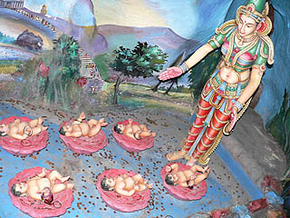
もう、のっけからこんなんですから。赤ちゃん精霊流し。
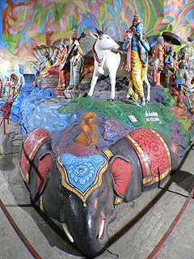
神様の住まう世界は像の背中なのでした。
コレはまさにレインボーカラーに彩られた色即是空ワールドじゃあ！いや、ここはヒンズー教だから、ってそれより意味違ってるし・・・
これはヴィシュヌ神の十化身だろう。ヴィシュヌ神は悪者をやっつけるために姿を変えて戦うそうな。
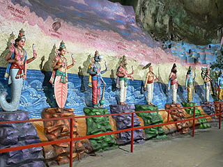
一番左の下半身魚辺りは水中活動を主とするサンダーバード4号みたいなものなのだろう、その隣はアジの開きに変化していると思われる。
小骨で敵のノドを詰まらせる作戦なのだろうか。深すぎるぞヴィシュヌ神。
赤ちゃんをあやすお母さん。そして浪速のオバチャンの必須アイテム豹柄スパッツ。こちらでは伯父様に人気なのか。
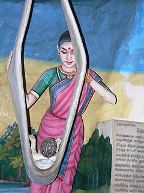 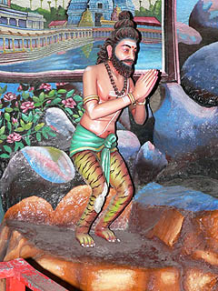
中には建物の書き割りみたいなモノもある。屋上に人がいたり、巨人の星の「飛雄馬！！」でお馴染み明子ねえちゃんみたいな人とか。
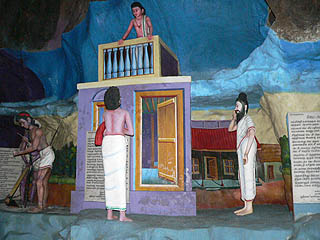 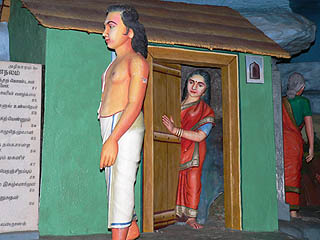
ガネーシャ神。頭が象で体は人間というヒンズー教の3大神といわれるシヴァ神の息子である。
歓喜天というお名前で秘仏扱いされている場合が多いが日本のお寺にもこの人、じゃなくて神様は結構いるのだよ。
脳味噌が象の割には頭脳明晰。で、皆さん御利益を授かろうと供え物を捧げております。
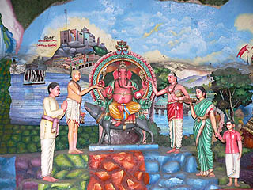
何という神様か知らないが、フンドシ信仰と思われる。
背景の書き割りが滅茶滅茶かっこいいですね。
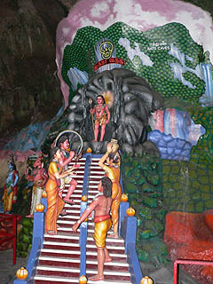 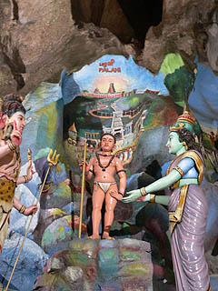
背景といえばコレが最高だった。
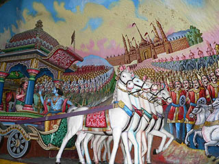
これ、手前の馬と馬車だけが若干レリーフ状態になっているだけであとは全部絵である。
トリックアートっぽい手法とやり過ぎとも思える遠近感を強調させた背景画。インド映画のダンスシーンを彷佛とさせる壮大なスケール感があって迫力ありまくりです。
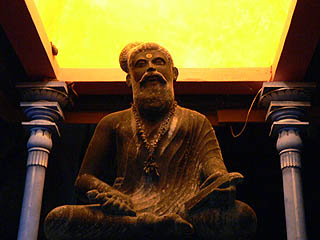
行者さんもあまりの野放図な色の洪水に呆れてかえってますわ。
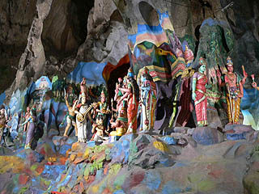 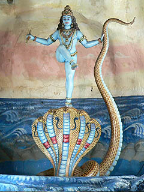
神像の大きさは１／１スケール程度、七色の背景の中、様々なヒューマン、じゃなくて神様ドラマを繰り広げている。
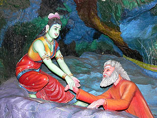
それにしてもやっぱり緑とか水色の神様は如何なものかと考えてしまう。
確かに普通の人間じゃあないんだぞ、という事を強調しているのはよーく解るのだが、それにしても肌の色が緑とか水色というのはヒンズーの人達から見たら別に珍しくはないのかも知れないが、慣れない私から見たら何だか火星人みたいじゃないですか。あ、もしかしたら様々な肌の色の人達がいるインドにおいて、そのどれにも属さない神性を表現するためにどこにもいない、あり得ない人種を創るための手法だったのだろうか。
一番強烈だったのはこのお方。
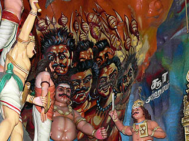
北斗百烈拳！って感じ。
ヒンズー教のタイガーバームガーデンともいえる濃い内容だった。サプライズという意味ではこの旅で一番印象深かったところである。
と言う訳でバツー洞窟に行かれた際には隣のアートギャラリーもお忘れなく。
で、アートギャラリーを出ると、さらに洞窟があるようだ。
目印はこの巨大ハヌマーン神像の近く。
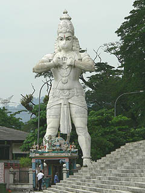
ちなみにこのハマヌーンが何をしているのかというと、主君ラーマ王への忠誠を示しているそうな。
胸をパッカリ開いてみると中には「忠義」とでも書いてあるのだろうか。いやいや何だか良く解らないが神様がいたみたいです。
ああ、五百羅漢でお腹をガバっと広げてる羅怙羅みたいなモンですかね。
そのハマヌーン像の先にもうひとつの洞窟がある。先程の洞窟の事もあるので見過ごさずに行ってみる事にした。
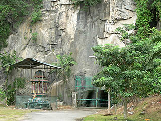
洞窟の名前はラマヤナ洞窟（RamayanaCaves）。しかし残念な事に日曜日のみの公開となっているそうでこの日はクローズしていた。
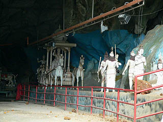 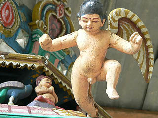
とりあえず柵の隙間から中を伺う。ここも何やら面白そうなジオラマ神話世界が展開されている様子だった。
洞窟の入口前には東屋のようなものがあり、その屋根に片羽の天使がいた。最初は羽が取れちゃったのだとばかり思っていたのだが、見れば数体いる天使全部が片羽だった。何か謂れがあるのでしょうか？
で、土産屋で売っていた絵葉書を見ると、このラマヤナ洞窟にはこんな素敵なオジサマが昼寝を決め込んでいたらしい。
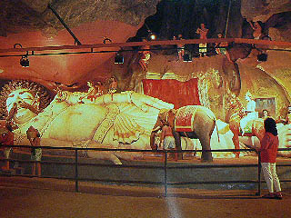
くぅ〜見たかったぞ！！！！
と言う訳でバツー洞窟に行かれた際には曜日のチェックもお忘れなきよう。マントラマントラ。
おしまい
馬来半島珍寺伝説
珍寺大道場 HOME